Assignment 2
Prepare for Class + Assignment 3:
Prepare for Class:
Edward Tufte’s The Future of Data Analysis - One page review: https://www.youtube.com/watch?v=rHUDJ8RyseQ
Edward Tufte discusses how researchers can use data to better understand the world without letting their own expectations influence the results. Tufte takes from John Tukey the idea that researchers should explore their data and “muck around” with it. Looking at the data in different ways can help researchers notice patterns, outliers, or questions they may not have originally considered.
Where Tufte departs from Tukey is what happens after a pattern is found. Tufte argues that something discovered while exploring data should not immediately be treated as confirmed. Instead, researchers should test the finding again with new data or a separate analysis. This is especially important today because technology makes it easy to test many different variables and models until something appears significant, even if the result happened by chance. Tufte also talks about confirmation bias and the importance of trying to “get it right” rather than finding evidence that supports what we already believe.
This also connects to data visualization. A visualization should do more than make data look good; it should help us understand and question the evidence. Exploratory visualization gives us more freedom to discover unexpected patterns, while confirmatory analysis is more structured and helps protect against false positives and confirmation bias.
Data:
a. Explore the Happy Planet Index: https://happyplanetindex.org/
b. Download the data set and import it into RStudio
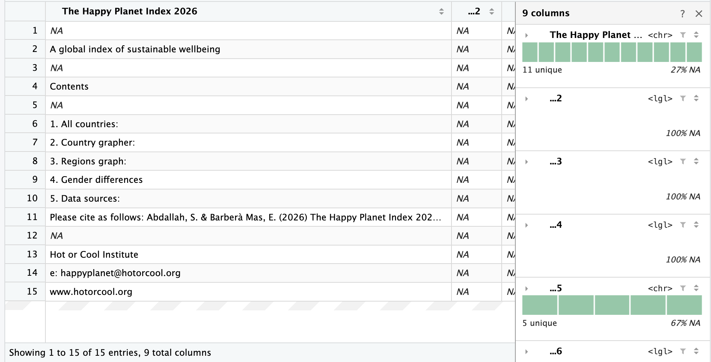
c. Filter to one year before plotting:
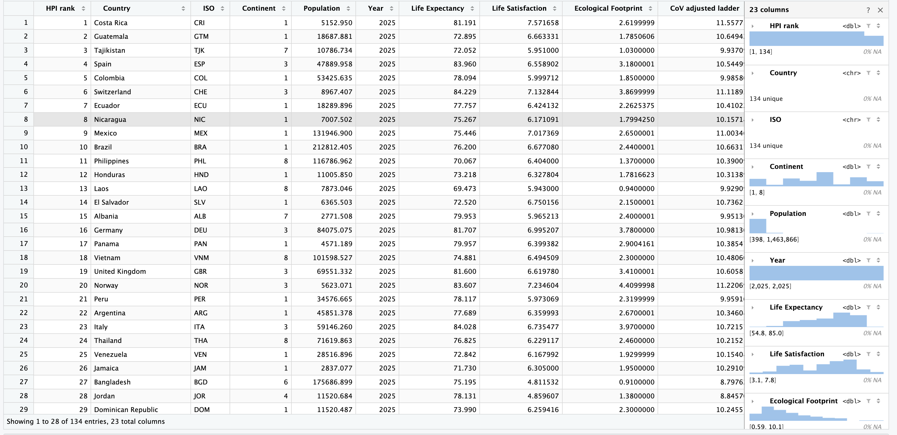
d. Plot the HPI score using several charts. Compare what each does with the same numbers, and name the component doing the work:
i. Box Plot:
The boxplot uses position, lines, and area to summarize the distribution of HPI scores, making the median, spread, and potential outliers easy to identify.
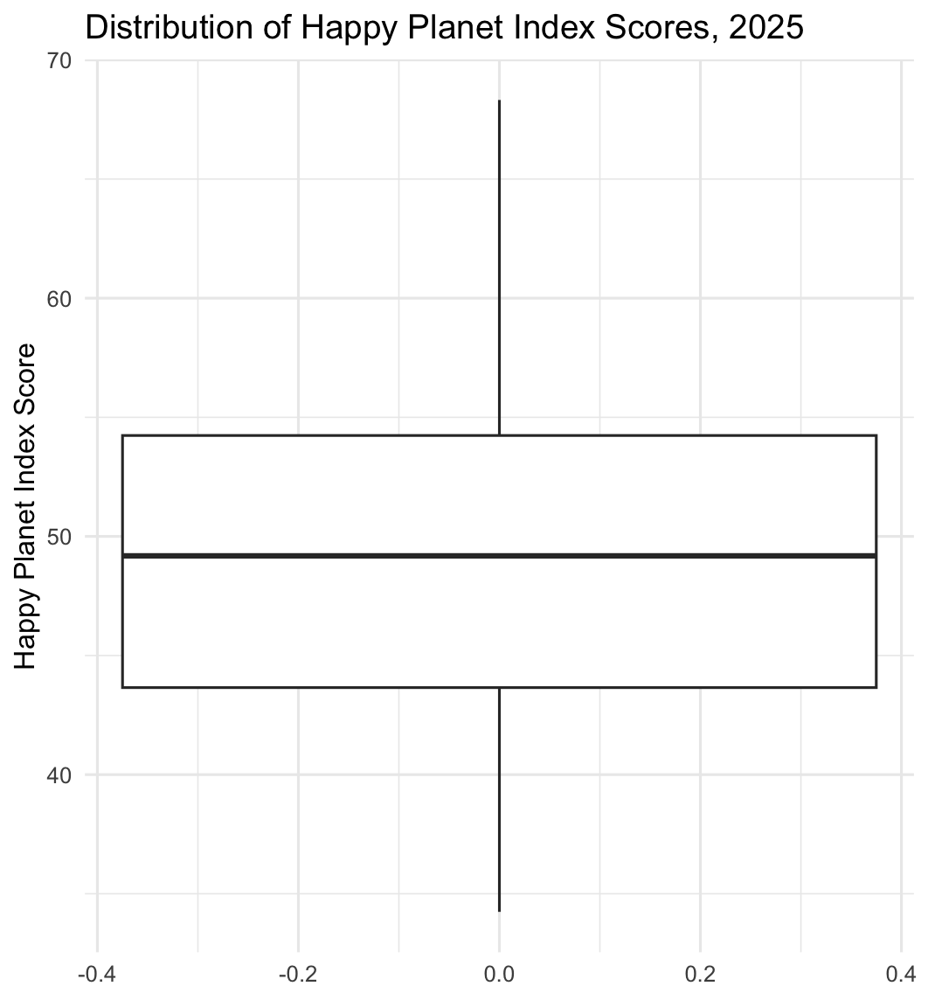
ii. Dot Plot:
The dot plot uses the position of each dot along a common scale to represent each country’s HPI score, making differences and rankings across countries visible.
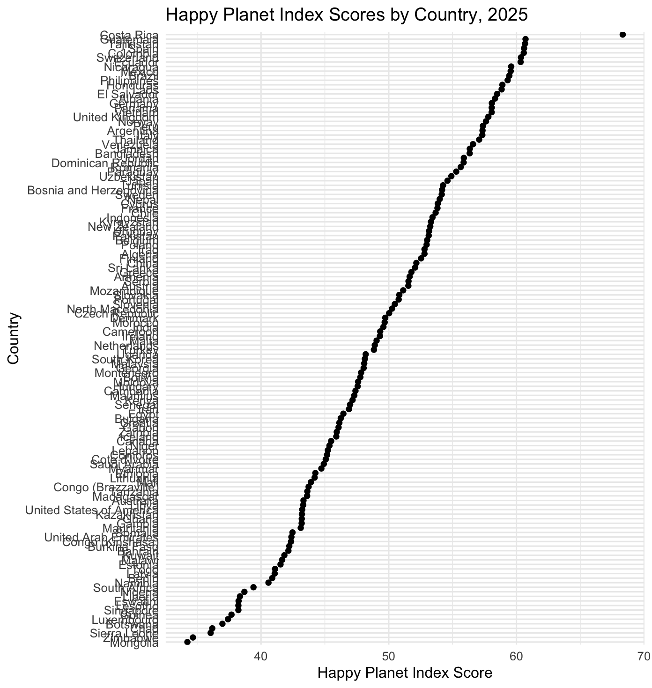
iii. Bar Chart:
The bar chart uses the length of each bar to encode HPI scores, making the relative magnitude and ranking of countries easy to compare.
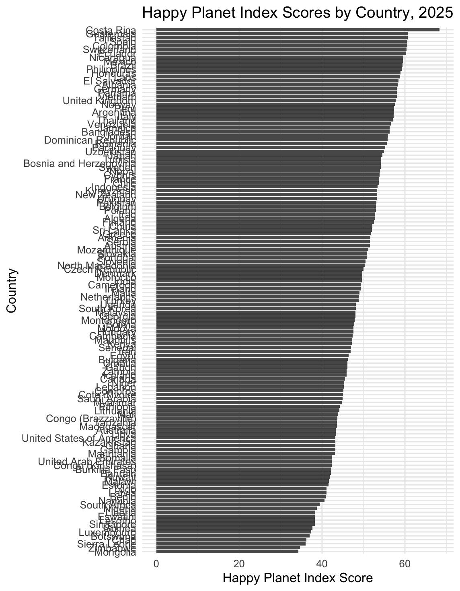
The dot plot and bar chart display the same 2025 HPI scores, they display the data in different ways. The dot plot relies primarily on position and provides a relatively compact comparison of countries. The bar chart uses bar length to emphasize magnitude, making differences between both high and low scoring countries more visually prominent.
Assignment 3:
Document a Chart:
a. Rerun murrell01.R
b. Will be using Figure 1.1: Simple Scatterplot:
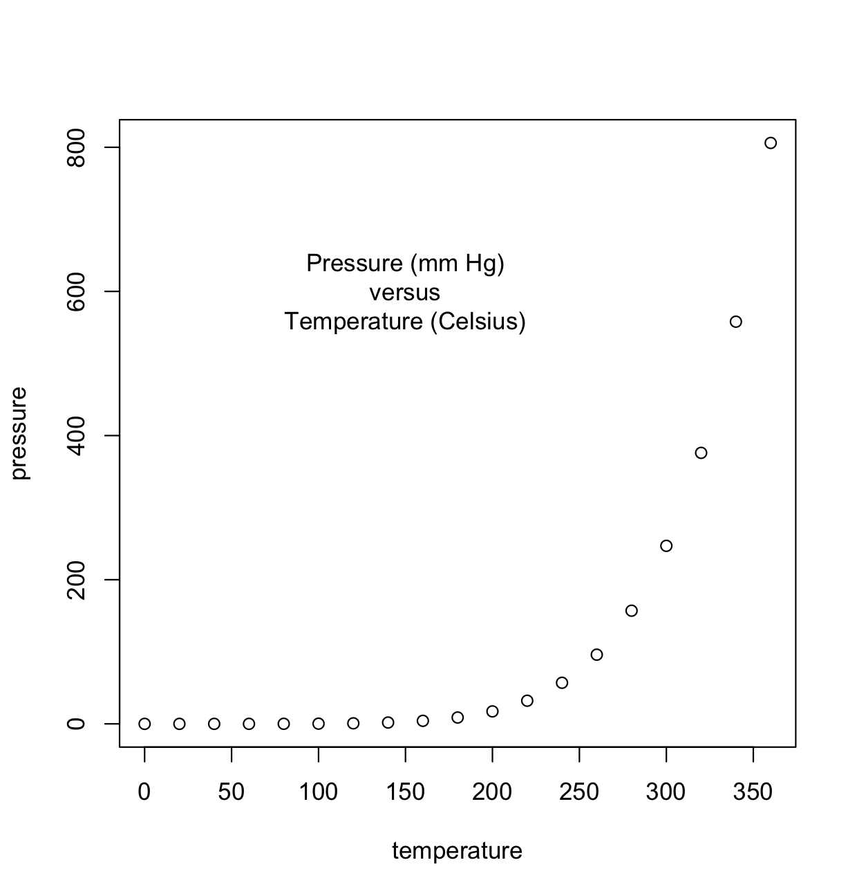
Anscombe’s Quartet:
a. y1
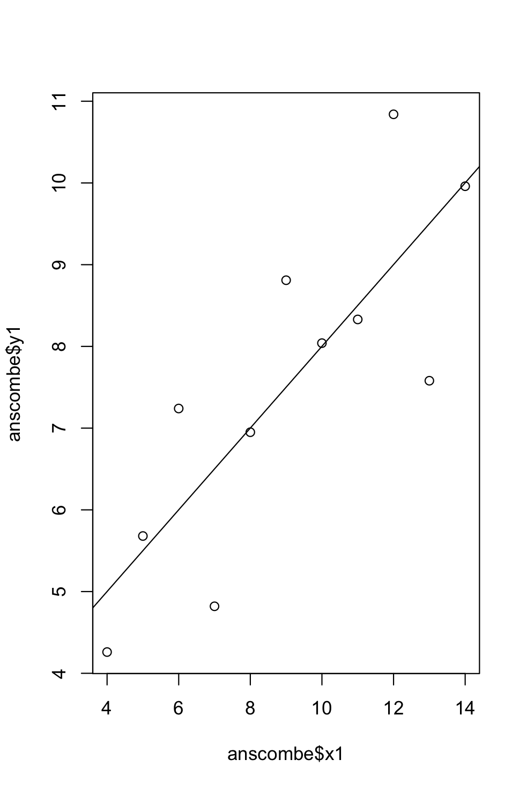
b. y2
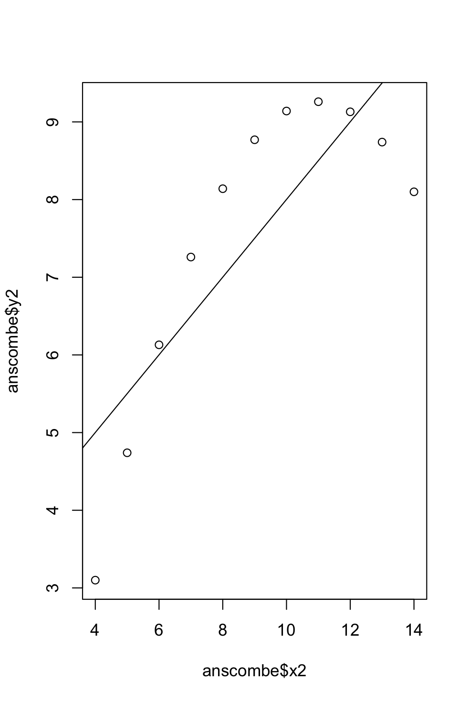
c. y3
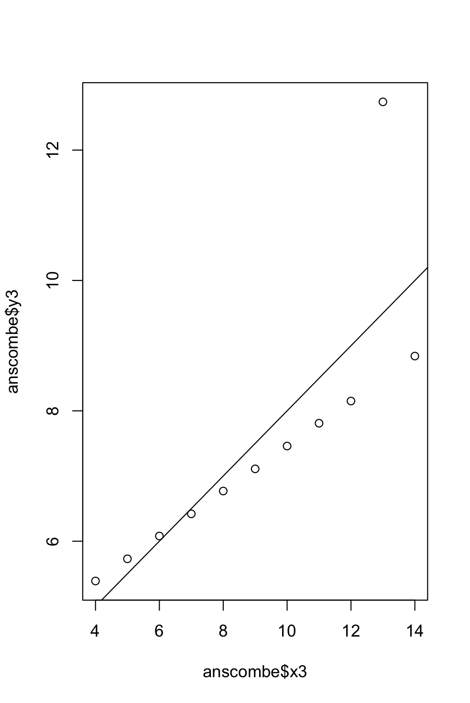
d. y4
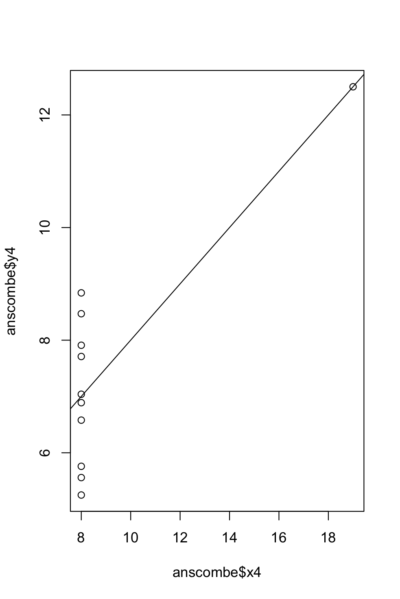
e. Compare the regression models:
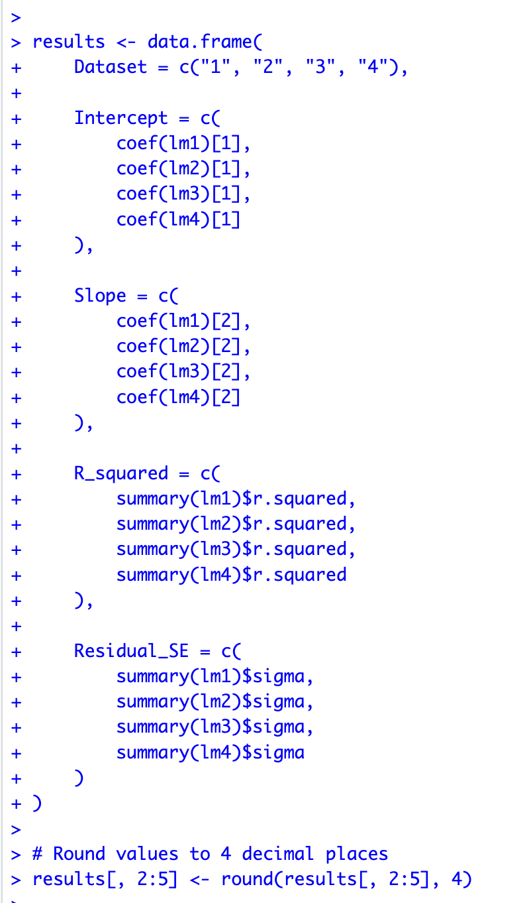
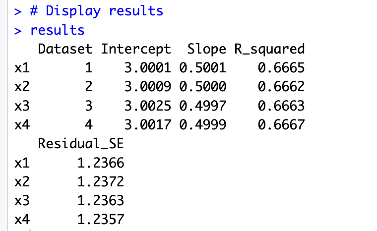
Compare ways of drawing them:
The four data sets have nearly identical regression statistics, the plots show very different patterns.
Dataset 1 shows a linear relationship
Dataset 2 shows a curved relationship
Dataset 3 has a mostly linear pattern with an outlier
Dataset 4 has one unusual observation while most x-values are clustered together.
This shows that summary statistics alone can hide nonlinear patterns, outliers, and unusual distributions that are easy to identify in a visualization.
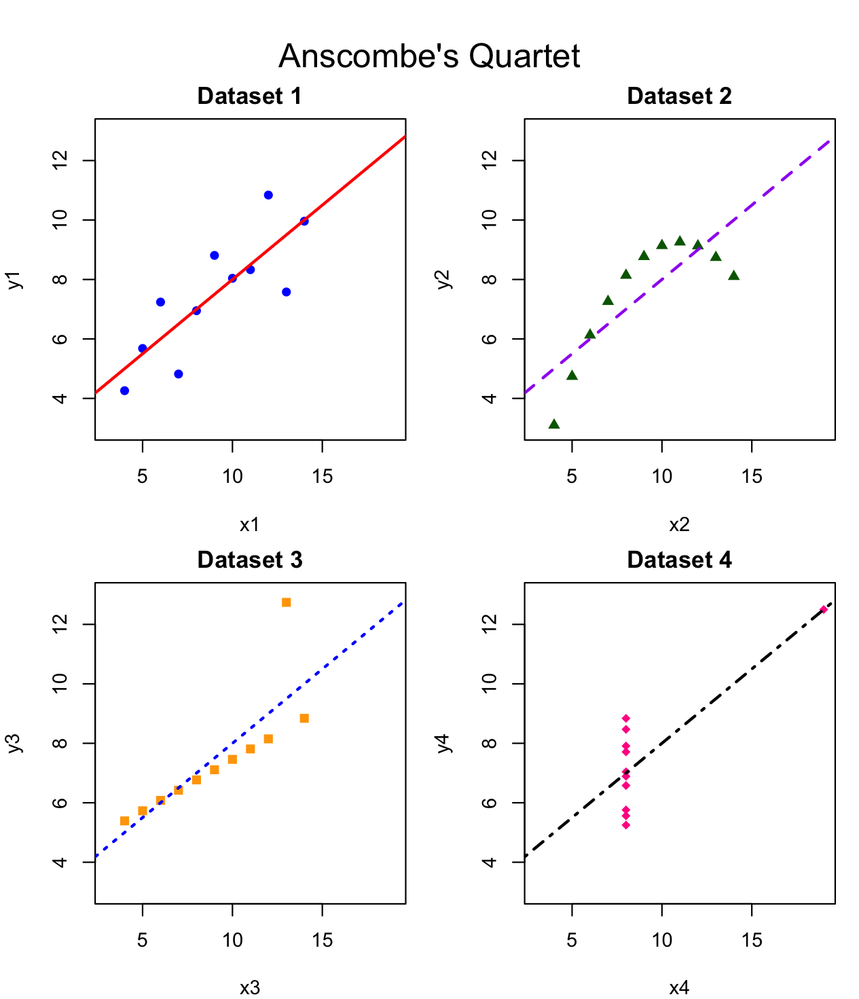
- Now compare in ggplot2
In ggplot2, the base R settings for the font and overall appearance changed. The following are the scale functions:
The colors
Plotting characters
Line types
Axis settings
The base R points and line functions became geom point and geom line while labels and annotations were handled with labs and annotate.
Functions such as plot new and plot window, did not have direct equivalents because ggplot2 automatically creates and manages the plotting area.
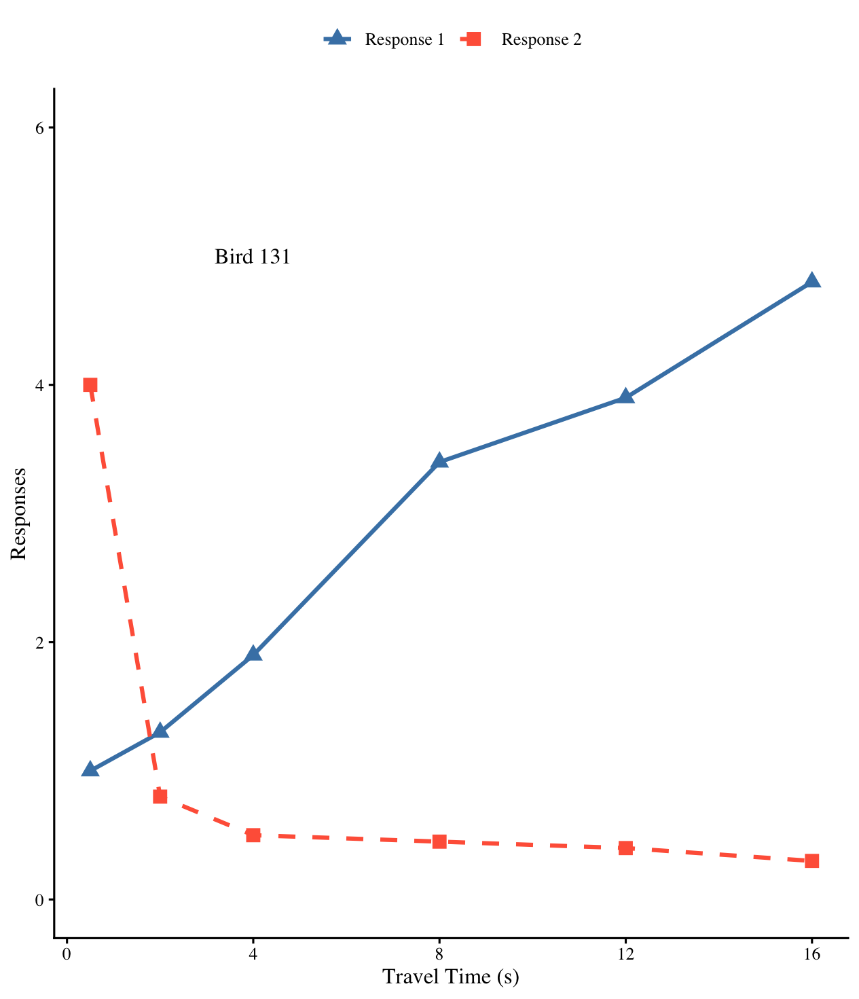
##Assignment #3